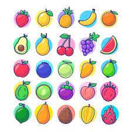
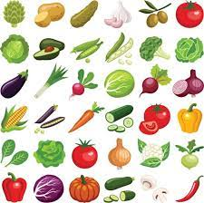
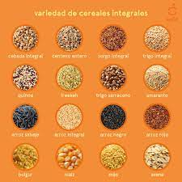
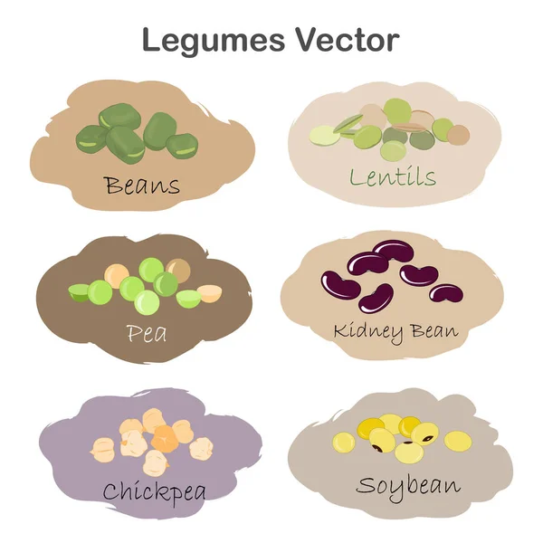

| Tipos de alimentos | Ejemplos | Imagenes |
|---|---|---|
| Frutas | fresas, manzana, pera, sandia |  |
| Verduras | JItomate, papa, cebolla, zanahoria |  |
| Cereales | arroz, maiz, trigo, cebada, avena |  |
| Leguminosas | alfalfa, chicharo, garbanzo, habas, ejote |  |
| Origen animal | carne, huvos, pescado, mariscos | |
| leche y sus derivados | lechd, crema, yogurt, mantequilla |